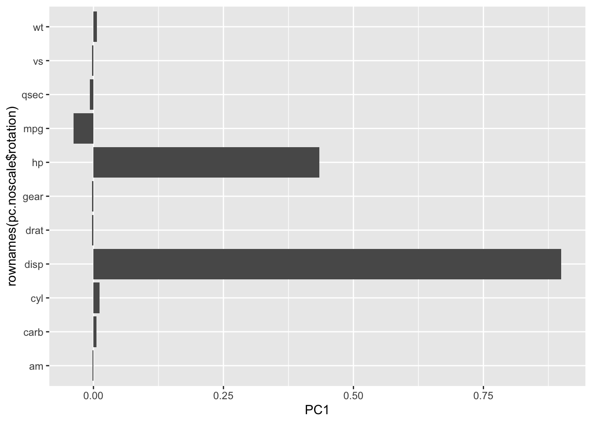
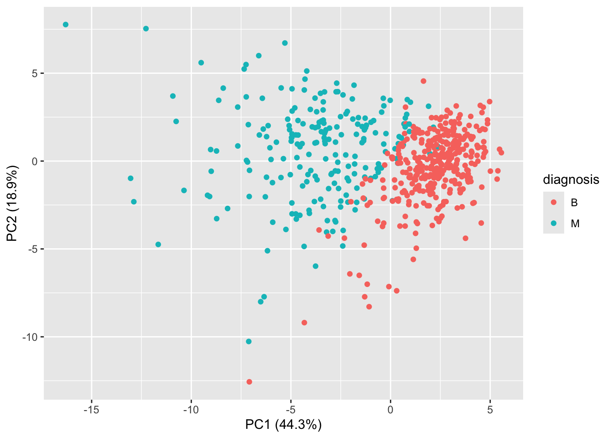
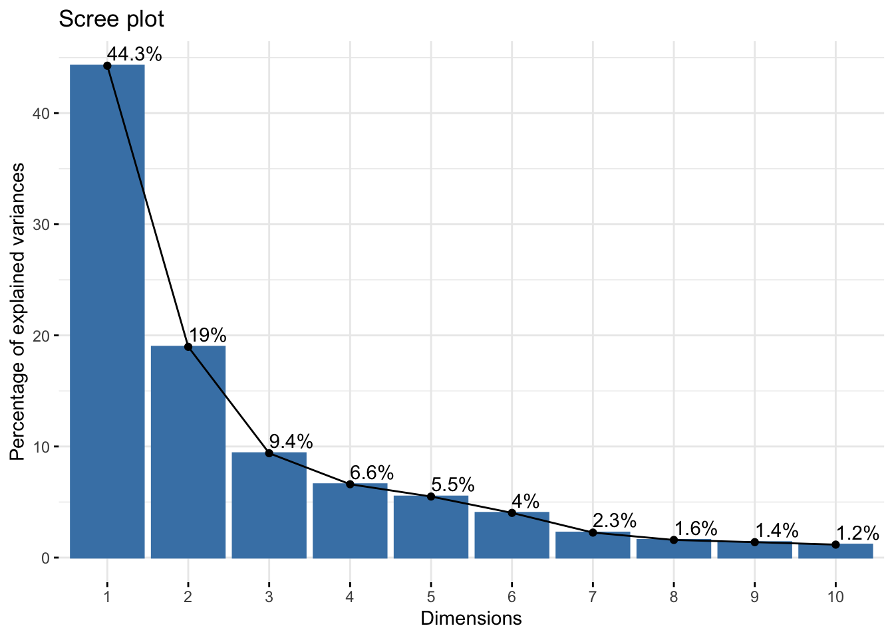
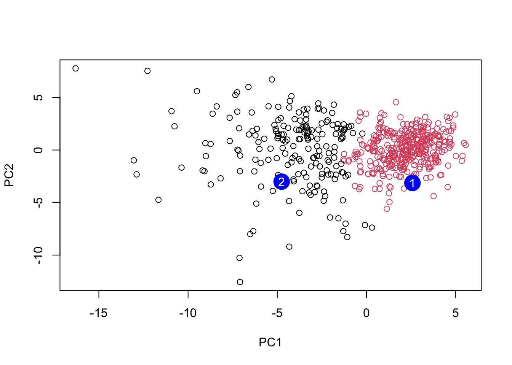

fna.data <- "WisconsinCancer.csv"Class8:Breast Cancer Mini Project
Today we will practice applying our PCA and clustering methods from the last class oon some brest cancer FNA data.
Let’s get the data into R…
Save your input data file into your Project directory
Complete the following code to input the data and store as wisc.df
wisc.df <- read.csv(fna.data, row.names=1)
head(wisc.df) diagnosis radius_mean texture_mean perimeter_mean area_mean
842302 M 17.99 10.38 122.80 1001.0
842517 M 20.57 17.77 132.90 1326.0
84300903 M 19.69 21.25 130.00 1203.0
84348301 M 11.42 20.38 77.58 386.1
84358402 M 20.29 14.34 135.10 1297.0
843786 M 12.45 15.70 82.57 477.1
smoothness_mean compactness_mean concavity_mean concave.points_mean
842302 0.11840 0.27760 0.3001 0.14710
842517 0.08474 0.07864 0.0869 0.07017
84300903 0.10960 0.15990 0.1974 0.12790
84348301 0.14250 0.28390 0.2414 0.10520
84358402 0.10030 0.13280 0.1980 0.10430
843786 0.12780 0.17000 0.1578 0.08089
symmetry_mean fractal_dimension_mean radius_se texture_se perimeter_se
842302 0.2419 0.07871 1.0950 0.9053 8.589
842517 0.1812 0.05667 0.5435 0.7339 3.398
84300903 0.2069 0.05999 0.7456 0.7869 4.585
84348301 0.2597 0.09744 0.4956 1.1560 3.445
84358402 0.1809 0.05883 0.7572 0.7813 5.438
843786 0.2087 0.07613 0.3345 0.8902 2.217
area_se smoothness_se compactness_se concavity_se concave.points_se
842302 153.40 0.006399 0.04904 0.05373 0.01587
842517 74.08 0.005225 0.01308 0.01860 0.01340
84300903 94.03 0.006150 0.04006 0.03832 0.02058
84348301 27.23 0.009110 0.07458 0.05661 0.01867
84358402 94.44 0.011490 0.02461 0.05688 0.01885
843786 27.19 0.007510 0.03345 0.03672 0.01137
symmetry_se fractal_dimension_se radius_worst texture_worst
842302 0.03003 0.006193 25.38 17.33
842517 0.01389 0.003532 24.99 23.41
84300903 0.02250 0.004571 23.57 25.53
84348301 0.05963 0.009208 14.91 26.50
84358402 0.01756 0.005115 22.54 16.67
843786 0.02165 0.005082 15.47 23.75
perimeter_worst area_worst smoothness_worst compactness_worst
842302 184.60 2019.0 0.1622 0.6656
842517 158.80 1956.0 0.1238 0.1866
84300903 152.50 1709.0 0.1444 0.4245
84348301 98.87 567.7 0.2098 0.8663
84358402 152.20 1575.0 0.1374 0.2050
843786 103.40 741.6 0.1791 0.5249
concavity_worst concave.points_worst symmetry_worst
842302 0.7119 0.2654 0.4601
842517 0.2416 0.1860 0.2750
84300903 0.4504 0.2430 0.3613
84348301 0.6869 0.2575 0.6638
84358402 0.4000 0.1625 0.2364
843786 0.5355 0.1741 0.3985
fractal_dimension_worst
842302 0.11890
842517 0.08902
84300903 0.08758
84348301 0.17300
84358402 0.07678
843786 0.12440Q1. How many samples/ patients are in this dataset?
There are 569 samples in this dataset
nrow(wisc.df)[1] 569Q2. How many cancer/non-cancer diagnosis samples are in there?
sum(wisc.df$diagnosis == "M")[1] 212The table() dunction is a super useful utility for counting up the number of observations of each type.
table(wisc.df$diagnosis)
B M
357 212 Q3. How many columns/dimensions are there?
ncol(wisc.df)[1] 31Q4. How many columns are suffixed with “_mean”?
x <- grep("_mean", colnames(wisc.df))
length(x)[1] 10Tidy to remove diagnosis
Save a vector of this expert dianosis for later and remove it from the data to undergo clustering, PCA etc.
diagnosis <- wisc.df$diagnosiswisc.data <- wisc.df[,-1]Cluster the dataset
Let’s try a hclust().
hc.raw <- hclust(dist(wisc.df))Warning in dist(wisc.df): NAs introduced by coercionplot(hc.raw)To get some clusters out of this I can “cut” the tree at given height:
grps <- cutree(hc.raw, h = 4000)
table(grps)grps
1 2
549 20 To see the correspondance of our cluster grps with the expert diagnosis I can use table():
table(grps, diagnosis) diagnosis
grps B M
1 357 192
2 0 20That is not that useful clustering result.
Principal Component Analysis (PCA)
Scaling data before analysis is often critical.
Side-note: The default for prcomp() is scale=FALSE.
There is a dataset in R called mtcars() which has loads of numbers about old cars.
head(mtcars) mpg cyl disp hp drat wt qsec vs am gear carb
Mazda RX4 21.0 6 160 110 3.90 2.620 16.46 0 1 4 4
Mazda RX4 Wag 21.0 6 160 110 3.90 2.875 17.02 0 1 4 4
Datsun 710 22.8 4 108 93 3.85 2.320 18.61 1 1 4 1
Hornet 4 Drive 21.4 6 258 110 3.08 3.215 19.44 1 0 3 1
Hornet Sportabout 18.7 8 360 175 3.15 3.440 17.02 0 0 3 2
Valiant 18.1 6 225 105 2.76 3.460 20.22 1 0 3 1Average values of each column
colMeans(mtcars) mpg cyl disp hp drat wt qsec
20.090625 6.187500 230.721875 146.687500 3.596563 3.217250 17.848750
vs am gear carb
0.437500 0.406250 3.687500 2.812500 Stdeviation of each column
apply(mtcars, 2, sd) mpg cyl disp hp drat wt
6.0269481 1.7859216 123.9386938 68.5628685 0.5346787 0.9784574
qsec vs am gear carb
1.7869432 0.5040161 0.4989909 0.7378041 1.6152000 Let’s compare no scale vs scaled dataset
pc.noscale <- prcomp(mtcars)
pc.scale <- prcomp(mtcars, scale. = TRUE)
pc.noscaleStandard deviations (1, .., p=11):
[1] 136.5330479 38.1480776 3.0710166 1.3066508 0.9064862 0.6635411
[7] 0.3085791 0.2859604 0.2506973 0.2106519 0.1984238
Rotation (n x k) = (11 x 11):
PC1 PC2 PC3 PC4 PC5
mpg -0.038118199 0.009184847 0.982070847 0.047634784 -0.08832843
cyl 0.012035150 -0.003372487 -0.063483942 -0.227991962 0.23872590
disp 0.899568146 0.435372320 0.031442656 -0.005086826 -0.01073597
hp 0.434784387 -0.899307303 0.025093049 0.035715638 0.01655194
drat -0.002660077 -0.003900205 0.039724928 -0.057129357 -0.13332765
wt 0.006239405 0.004861023 -0.084910258 0.127962867 -0.24354296
qsec -0.006671270 0.025011743 -0.071670457 0.886472188 -0.21416101
vs -0.002729474 0.002198425 0.004203328 0.177123945 -0.01688851
am -0.001962644 -0.005793760 0.054806391 -0.135658793 -0.06270200
gear -0.002604768 -0.011272462 0.048524372 -0.129913811 -0.27616440
carb 0.005766010 -0.027779208 -0.102897231 -0.268931427 -0.85520810
PC6 PC7 PC8 PC9 PC10
mpg -0.143790084 -0.039239174 -2.271040e-02 -0.002790139 0.030630361
cyl -0.793818050 0.425011021 1.890403e-01 0.042677206 0.131718534
disp 0.007424138 0.000582398 5.841464e-04 0.003532713 -0.005399132
hp 0.001653685 -0.002212538 -4.748087e-06 -0.003734085 0.001862554
drat 0.227229260 0.034847411 9.385817e-01 -0.014131110 0.184102094
wt -0.127142296 -0.186558915 -1.561907e-01 -0.390600261 0.829886844
qsec -0.189564973 0.254844548 1.028515e-01 -0.095914479 -0.204240658
vs 0.102619063 -0.080788938 2.132903e-03 0.684043835 0.303060724
am 0.205217266 0.200858874 2.273255e-02 -0.572372433 -0.162808201
gear 0.334971103 0.801625551 -2.174878e-01 0.156118559 0.203540645
carb -0.283788381 -0.165474186 -3.972219e-03 0.127583043 -0.239954748
PC11
mpg 0.0158569365
cyl -0.1454453628
disp -0.0009420262
hp 0.0021526102
drat 0.0973818815
wt 0.0198581635
qsec -0.0110677880
vs -0.6256900918
am -0.7331658036
gear 0.1909325849
carb -0.0557957968pc.scaleStandard deviations (1, .., p=11):
[1] 2.5706809 1.6280258 0.7919579 0.5192277 0.4727061 0.4599958 0.3677798
[8] 0.3505730 0.2775728 0.2281128 0.1484736
Rotation (n x k) = (11 x 11):
PC1 PC2 PC3 PC4 PC5 PC6
mpg -0.3625305 0.01612440 -0.22574419 -0.022540255 -0.10284468 -0.10879743
cyl 0.3739160 0.04374371 -0.17531118 -0.002591838 -0.05848381 0.16855369
disp 0.3681852 -0.04932413 -0.06148414 0.256607885 -0.39399530 -0.33616451
hp 0.3300569 0.24878402 0.14001476 -0.067676157 -0.54004744 0.07143563
drat -0.2941514 0.27469408 0.16118879 0.854828743 -0.07732727 0.24449705
wt 0.3461033 -0.14303825 0.34181851 0.245899314 0.07502912 -0.46493964
qsec -0.2004563 -0.46337482 0.40316904 0.068076532 0.16466591 -0.33048032
vs -0.3065113 -0.23164699 0.42881517 -0.214848616 -0.59953955 0.19401702
am -0.2349429 0.42941765 -0.20576657 -0.030462908 -0.08978128 -0.57081745
gear -0.2069162 0.46234863 0.28977993 -0.264690521 -0.04832960 -0.24356284
carb 0.2140177 0.41357106 0.52854459 -0.126789179 0.36131875 0.18352168
PC7 PC8 PC9 PC10 PC11
mpg 0.367723810 0.754091423 -0.235701617 -0.13928524 -0.124895628
cyl 0.057277736 0.230824925 -0.054035270 0.84641949 -0.140695441
disp 0.214303077 -0.001142134 -0.198427848 -0.04937979 0.660606481
hp -0.001495989 0.222358441 0.575830072 -0.24782351 -0.256492062
drat 0.021119857 -0.032193501 0.046901228 0.10149369 -0.039530246
wt -0.020668302 0.008571929 -0.359498251 -0.09439426 -0.567448697
qsec 0.050010522 0.231840021 0.528377185 0.27067295 0.181361780
vs -0.265780836 -0.025935128 -0.358582624 0.15903909 0.008414634
am -0.587305101 0.059746952 0.047403982 0.17778541 0.029823537
gear 0.605097617 -0.336150240 0.001735039 0.21382515 -0.053507085
carb -0.174603192 0.395629107 -0.170640677 -0.07225950 0.319594676Let’s look at the loadings first:
library(ggplot2)
ggplot(pc.noscale$rotation, aes(PC1, rownames(pc.noscale$rotation))) +
geom_col()
ggplot(pc.scale$rotation, aes(PC1, row.names(pc.scale$rotation))) +
geom_col()The main PC result figure is often called a “score plot” or “PC plot” or “PC1 vs PC2 plot”
ggplot(pc.noscale$x, aes(PC1, PC2, label = rownames(pc.noscale$x))) +
geom_point() +
geom_label()ggplot(pc.scale$x, aes(PC1, PC2, label = rownames(pc.scale$x))) +
geom_point() +
geom_label()What does scale() do?
x <- scale(mtcars)
round( colMeans(x) ) mpg cyl disp hp drat wt qsec vs am gear carb
0 0 0 0 0 0 0 0 0 0 0 round( apply(x, 2, sd) ) mpg cyl disp hp drat wt qsec vs am gear carb
1 1 1 1 1 1 1 1 1 1 1 Key-point: Generally we want to “scale” our data before analysis to avoid being mis-lead due to your data having different measurement units.
Breast Cancer PCA
We will scale our data.
pca <- prcomp(wisc.data, scale=T)
pcaStandard deviations (1, .., p=30):
[1] 3.64439401 2.38565601 1.67867477 1.40735229 1.28402903 1.09879780
[7] 0.82171778 0.69037464 0.64567392 0.59219377 0.54213992 0.51103950
[13] 0.49128148 0.39624453 0.30681422 0.28260007 0.24371918 0.22938785
[19] 0.22243559 0.17652026 0.17312681 0.16564843 0.15601550 0.13436892
[25] 0.12442376 0.09043030 0.08306903 0.03986650 0.02736427 0.01153451
Rotation (n x k) = (30 x 30):
PC1 PC2 PC3 PC4
radius_mean -0.21890244 0.233857132 -0.008531243 0.041408962
texture_mean -0.10372458 0.059706088 0.064549903 -0.603050001
perimeter_mean -0.22753729 0.215181361 -0.009314220 0.041983099
area_mean -0.22099499 0.231076711 0.028699526 0.053433795
smoothness_mean -0.14258969 -0.186113023 -0.104291904 0.159382765
compactness_mean -0.23928535 -0.151891610 -0.074091571 0.031794581
concavity_mean -0.25840048 -0.060165363 0.002733838 0.019122753
concave.points_mean -0.26085376 0.034767500 -0.025563541 0.065335944
symmetry_mean -0.13816696 -0.190348770 -0.040239936 0.067124984
fractal_dimension_mean -0.06436335 -0.366575471 -0.022574090 0.048586765
radius_se -0.20597878 0.105552152 0.268481387 0.097941242
texture_se -0.01742803 -0.089979682 0.374633665 -0.359855528
perimeter_se -0.21132592 0.089457234 0.266645367 0.088992415
area_se -0.20286964 0.152292628 0.216006528 0.108205039
smoothness_se -0.01453145 -0.204430453 0.308838979 0.044664180
compactness_se -0.17039345 -0.232715896 0.154779718 -0.027469363
concavity_se -0.15358979 -0.197207283 0.176463743 0.001316880
concave.points_se -0.18341740 -0.130321560 0.224657567 0.074067335
symmetry_se -0.04249842 -0.183848000 0.288584292 0.044073351
fractal_dimension_se -0.10256832 -0.280092027 0.211503764 0.015304750
radius_worst -0.22799663 0.219866379 -0.047506990 0.015417240
texture_worst -0.10446933 0.045467298 -0.042297823 -0.632807885
perimeter_worst -0.23663968 0.199878428 -0.048546508 0.013802794
area_worst -0.22487053 0.219351858 -0.011902318 0.025894749
smoothness_worst -0.12795256 -0.172304352 -0.259797613 0.017652216
compactness_worst -0.21009588 -0.143593173 -0.236075625 -0.091328415
concavity_worst -0.22876753 -0.097964114 -0.173057335 -0.073951180
concave.points_worst -0.25088597 0.008257235 -0.170344076 0.006006996
symmetry_worst -0.12290456 -0.141883349 -0.271312642 -0.036250695
fractal_dimension_worst -0.13178394 -0.275339469 -0.232791313 -0.077053470
PC5 PC6 PC7 PC8
radius_mean -0.037786354 0.0187407904 -0.1240883403 0.007452296
texture_mean 0.049468850 -0.0321788366 0.0113995382 -0.130674825
perimeter_mean -0.037374663 0.0173084449 -0.1144770573 0.018687258
area_mean -0.010331251 -0.0018877480 -0.0516534275 -0.034673604
smoothness_mean 0.365088528 -0.2863744966 -0.1406689928 0.288974575
compactness_mean -0.011703971 -0.0141309489 0.0309184960 0.151396350
concavity_mean -0.086375412 -0.0093441809 -0.1075204434 0.072827285
concave.points_mean 0.043861025 -0.0520499505 -0.1504822142 0.152322414
symmetry_mean 0.305941428 0.3564584607 -0.0938911345 0.231530989
fractal_dimension_mean 0.044424360 -0.1194306679 0.2957600240 0.177121441
radius_se 0.154456496 -0.0256032561 0.3124900373 -0.022539967
texture_se 0.191650506 -0.0287473145 -0.0907553556 0.475413139
perimeter_se 0.120990220 0.0018107150 0.3146403902 0.011896690
area_se 0.127574432 -0.0428639079 0.3466790028 -0.085805135
smoothness_se 0.232065676 -0.3429173935 -0.2440240556 -0.573410232
compactness_se -0.279968156 0.0691975186 0.0234635340 -0.117460157
concavity_se -0.353982091 0.0563432386 -0.2088237897 -0.060566501
concave.points_se -0.195548089 -0.0312244482 -0.3696459369 0.108319309
symmetry_se 0.252868765 0.4902456426 -0.0803822539 -0.220149279
fractal_dimension_se -0.263297438 -0.0531952674 0.1913949726 -0.011168188
radius_worst 0.004406592 -0.0002906849 -0.0097099360 -0.042619416
texture_worst 0.092883400 -0.0500080613 0.0098707439 -0.036251636
perimeter_worst -0.007454151 0.0085009872 -0.0004457267 -0.030558534
area_worst 0.027390903 -0.0251643821 0.0678316595 -0.079394246
smoothness_worst 0.324435445 -0.3692553703 -0.1088308865 -0.205852191
compactness_worst -0.121804107 0.0477057929 0.1404729381 -0.084019659
concavity_worst -0.188518727 0.0283792555 -0.0604880561 -0.072467871
concave.points_worst -0.043332069 -0.0308734498 -0.1679666187 0.036170795
symmetry_worst 0.244558663 0.4989267845 -0.0184906298 -0.228225053
fractal_dimension_worst -0.094423351 -0.0802235245 0.3746576261 -0.048360667
PC9 PC10 PC11 PC12
radius_mean -0.223109764 0.095486443 -0.04147149 0.051067457
texture_mean 0.112699390 0.240934066 0.30224340 0.254896423
perimeter_mean -0.223739213 0.086385615 -0.01678264 0.038926106
area_mean -0.195586014 0.074956489 -0.11016964 0.065437508
smoothness_mean 0.006424722 -0.069292681 0.13702184 0.316727211
compactness_mean -0.167841425 0.012936200 0.30800963 -0.104017044
concavity_mean 0.040591006 -0.135602298 -0.12419024 0.065653480
concave.points_mean -0.111971106 0.008054528 0.07244603 0.042589267
symmetry_mean 0.256040084 0.572069479 -0.16305408 -0.288865504
fractal_dimension_mean -0.123740789 0.081103207 0.03804827 0.236358988
radius_se 0.249985002 -0.049547594 0.02535702 -0.016687915
texture_se -0.246645397 -0.289142742 -0.34494446 -0.306160423
perimeter_se 0.227154024 -0.114508236 0.16731877 -0.101446828
area_se 0.229160015 -0.091927889 -0.05161946 -0.017679218
smoothness_se -0.141924890 0.160884609 -0.08420621 -0.294710053
compactness_se -0.145322810 0.043504866 0.20688568 -0.263456509
concavity_se 0.358107079 -0.141276243 -0.34951794 0.251146975
concave.points_se 0.272519886 0.086240847 0.34237591 -0.006458751
symmetry_se -0.304077200 -0.316529830 0.18784404 0.320571348
fractal_dimension_se -0.213722716 0.367541918 -0.25062479 0.276165974
radius_worst -0.112141463 0.077361643 -0.10506733 0.039679665
texture_worst 0.103341204 0.029550941 -0.01315727 0.079797450
perimeter_worst -0.109614364 0.050508334 -0.05107628 -0.008987738
area_worst -0.080732461 0.069921152 -0.18459894 0.048088657
smoothness_worst 0.112315904 -0.128304659 -0.14389035 0.056514866
compactness_worst -0.100677822 -0.172133632 0.19742047 -0.371662503
concavity_worst 0.161908621 -0.311638520 -0.18501676 -0.087034532
concave.points_worst 0.060488462 -0.076648291 0.11777205 -0.068125354
symmetry_worst 0.064637806 -0.029563075 -0.15756025 0.044033503
fractal_dimension_worst -0.134174175 0.012609579 -0.11828355 -0.034731693
PC13 PC14 PC15 PC16
radius_mean 0.01196721 0.059506135 -0.051118775 -0.15058388
texture_mean 0.20346133 -0.021560100 -0.107922421 -0.15784196
perimeter_mean 0.04410950 0.048513812 -0.039902936 -0.11445396
area_mean 0.06737574 0.010830829 0.013966907 -0.13244803
smoothness_mean 0.04557360 0.445064860 -0.118143364 -0.20461325
compactness_mean 0.22928130 0.008101057 0.230899962 0.17017837
concavity_mean 0.38709081 -0.189358699 -0.128283732 0.26947021
concave.points_mean 0.13213810 -0.244794768 -0.217099194 0.38046410
symmetry_mean 0.18993367 0.030738856 -0.073961707 -0.16466159
fractal_dimension_mean 0.10623908 -0.377078865 0.517975705 -0.04079279
radius_se -0.06819523 0.010347413 -0.110050711 0.05890572
texture_se -0.16822238 -0.010849347 0.032752721 -0.03450040
perimeter_se -0.03784399 -0.045523718 -0.008268089 0.02651665
area_se 0.05606493 0.083570718 -0.046024366 0.04115323
smoothness_se 0.15044143 -0.201152530 0.018559465 -0.05803906
compactness_se 0.01004017 0.491755932 0.168209315 0.18983090
concavity_se 0.15878319 0.134586924 0.250471408 -0.12542065
concave.points_se -0.49402674 -0.199666719 0.062079344 -0.19881035
symmetry_se 0.01033274 -0.046864383 -0.113383199 -0.15771150
fractal_dimension_se -0.24045832 0.145652466 -0.353232211 0.26855388
radius_worst -0.13789053 0.023101281 0.166567074 -0.08156057
texture_worst -0.08014543 0.053430792 0.101115399 0.18555785
perimeter_worst -0.09696571 0.012219382 0.182755198 -0.05485705
area_worst -0.10116061 -0.006685465 0.314993600 -0.09065339
smoothness_worst -0.20513034 0.162235443 0.046125866 0.14555166
compactness_worst 0.01227931 0.166470250 -0.049956014 -0.15373486
concavity_worst 0.21798433 -0.066798931 -0.204835886 -0.21502195
concave.points_worst -0.25438749 -0.276418891 -0.169499607 0.17814174
symmetry_worst -0.25653491 0.005355574 0.139888394 0.25789401
fractal_dimension_worst -0.17281424 -0.212104110 -0.256173195 -0.40555649
PC17 PC18 PC19 PC20
radius_mean 0.202924255 0.1467123385 0.22538466 -0.049698664
texture_mean -0.038706119 -0.0411029851 0.02978864 -0.244134993
perimeter_mean 0.194821310 0.1583174548 0.23959528 -0.017665012
area_mean 0.255705763 0.2661681046 -0.02732219 -0.090143762
smoothness_mean 0.167929914 -0.3522268017 -0.16456584 0.017100960
compactness_mean -0.020307708 0.0077941384 0.28422236 0.488686329
concavity_mean -0.001598353 -0.0269681105 0.00226636 -0.033387086
concave.points_mean 0.034509509 -0.0828277367 -0.15497236 -0.235407606
symmetry_mean -0.191737848 0.1733977905 -0.05881116 0.026069156
fractal_dimension_mean 0.050225246 0.0878673570 -0.05815705 -0.175637222
radius_se -0.139396866 -0.2362165319 0.17588331 -0.090800503
texture_se 0.043963016 -0.0098586620 0.03600985 -0.071659988
perimeter_se -0.024635639 -0.0259288003 0.36570154 -0.177250625
area_se 0.334418173 0.3049069032 -0.41657231 0.274201148
smoothness_se 0.139595006 -0.2312599432 -0.01326009 0.090061477
compactness_se -0.008246477 0.1004742346 -0.24244818 -0.461098220
concavity_se 0.084616716 -0.0001954852 0.12638102 0.066946174
concave.points_se 0.108132263 0.0460549116 -0.01216430 0.068868294
symmetry_se -0.274059129 0.1870147640 -0.08903929 0.107385289
fractal_dimension_se -0.122733398 -0.0598230982 0.08660084 0.222345297
radius_worst -0.240049982 -0.2161013526 0.01366130 -0.005626909
texture_worst 0.069365185 0.0583984505 -0.07586693 0.300599798
perimeter_worst -0.234164147 -0.1885435919 0.09081325 0.011003858
area_worst -0.273399584 -0.1420648558 -0.41004720 0.060047387
smoothness_worst -0.278030197 0.5015516751 0.23451384 -0.129723903
compactness_worst -0.004037123 -0.0735745143 0.02020070 0.229280589
concavity_worst -0.191313419 -0.1039079796 -0.04578612 -0.046482792
concave.points_worst -0.075485316 0.0758138963 -0.26022962 0.033022340
symmetry_worst 0.430658116 -0.2787138431 0.11725053 -0.116759236
fractal_dimension_worst 0.159394300 0.0235647497 -0.01149448 -0.104991974
PC21 PC22 PC23 PC24
radius_mean -0.0685700057 -0.07292890 -0.0985526942 -0.18257944
texture_mean 0.4483694667 -0.09480063 -0.0005549975 0.09878679
perimeter_mean -0.0697690429 -0.07516048 -0.0402447050 -0.11664888
area_mean -0.0184432785 -0.09756578 0.0077772734 0.06984834
smoothness_mean -0.1194917473 -0.06382295 -0.0206657211 0.06869742
compactness_mean 0.1926213963 0.09807756 0.0523603957 -0.10413552
concavity_mean 0.0055717533 0.18521200 0.3248703785 0.04474106
concave.points_mean -0.0094238187 0.31185243 -0.0514087968 0.08402770
symmetry_mean -0.0869384844 0.01840673 -0.0512005770 0.01933947
fractal_dimension_mean -0.0762718362 -0.28786888 -0.0846898562 -0.13326055
radius_se 0.0863867747 0.15027468 -0.2641253170 -0.55870157
texture_se 0.2170719674 -0.04845693 -0.0008738805 0.02426730
perimeter_se -0.3049501584 -0.15935280 0.0900742110 0.51675039
area_se 0.1925877857 -0.06423262 0.0982150746 -0.02246072
smoothness_se -0.0720987261 -0.05054490 -0.0598177179 0.01563119
compactness_se -0.1403865724 0.04528769 0.0091038710 -0.12177779
concavity_se 0.0630479298 0.20521269 -0.3875423290 0.18820504
concave.points_se 0.0343753236 0.07254538 0.3517550738 -0.10966898
symmetry_se -0.0976995265 0.08465443 -0.0423628949 0.00322620
fractal_dimension_se 0.0628432814 -0.24470508 0.0857810992 0.07519442
radius_worst 0.0072938995 0.09629821 -0.0556767923 -0.15683037
texture_worst -0.5944401434 0.11111202 -0.0089228997 -0.11848460
perimeter_worst -0.0920235990 -0.01722163 0.0633448296 0.23711317
area_worst 0.1467901315 0.09695982 0.1908896250 0.14406303
smoothness_worst 0.1648492374 0.06825409 0.0936901494 -0.01099014
compactness_worst 0.1813748671 -0.02967641 -0.1479209247 0.18674995
concavity_worst -0.1321005945 -0.46042619 0.2864331353 -0.28885257
concave.points_worst 0.0008860815 -0.29984056 -0.5675277966 0.10734024
symmetry_worst 0.1627085487 -0.09714484 0.1213434508 -0.01438181
fractal_dimension_worst -0.0923439434 0.46947115 0.0076253382 0.03782545
PC25 PC26 PC27 PC28
radius_mean -0.01922650 -0.129476396 -0.131526670 2.111940e-01
texture_mean 0.08474593 -0.024556664 -0.017357309 -6.581146e-05
perimeter_mean 0.02701541 -0.125255946 -0.115415423 8.433827e-02
area_mean -0.21004078 0.362727403 0.466612477 -2.725083e-01
smoothness_mean 0.02895489 -0.037003686 0.069689923 1.479269e-03
compactness_mean 0.39662323 0.262808474 0.097748705 -5.462767e-03
concavity_mean -0.09697732 -0.548876170 0.364808397 4.553864e-02
concave.points_mean -0.18645160 0.387643377 -0.454699351 -8.883097e-03
symmetry_mean -0.02458369 -0.016044038 -0.015164835 1.433026e-03
fractal_dimension_mean -0.20722186 -0.097404839 -0.101244946 -6.311687e-03
radius_se -0.17493043 0.049977080 0.212982901 -1.922239e-01
texture_se 0.05698648 -0.011237242 -0.010092889 -5.622611e-03
perimeter_se 0.07292764 0.103653282 0.041691553 2.631919e-01
area_se 0.13185041 -0.155304589 -0.313358657 -4.206811e-02
smoothness_se 0.03121070 -0.007717557 -0.009052154 9.792963e-03
compactness_se 0.17316455 -0.049727632 0.046536088 -1.539555e-02
concavity_se 0.01593998 0.091454968 -0.084224797 5.820978e-03
concave.points_se -0.12954655 -0.017941919 -0.011165509 -2.900930e-02
symmetry_se -0.01951493 -0.017267849 -0.019975983 -7.636526e-03
fractal_dimension_se -0.08417120 0.035488974 -0.012036564 1.975646e-02
radius_worst 0.07070972 -0.197054744 -0.178666740 4.126396e-01
texture_worst -0.11818972 0.036469433 0.021410694 -3.902509e-04
perimeter_worst 0.11803403 -0.244103670 -0.241031046 -7.286809e-01
area_worst -0.03828995 0.231359525 0.237162466 2.389603e-01
smoothness_worst -0.04796476 0.012602464 -0.040853568 -1.535248e-03
compactness_worst -0.62438494 -0.100463424 -0.070505414 4.869182e-02
concavity_worst 0.11577034 0.266853781 -0.142905801 -1.764090e-02
concave.points_worst 0.26319634 -0.133574507 0.230901389 2.247567e-02
symmetry_worst 0.04529962 0.028184296 0.022790444 4.920481e-03
fractal_dimension_worst 0.28013348 0.004520482 0.059985998 -2.356214e-02
PC29 PC30
radius_mean 2.114605e-01 0.7024140910
texture_mean -1.053393e-02 0.0002736610
perimeter_mean 3.838261e-01 -0.6898969685
area_mean -4.227949e-01 -0.0329473482
smoothness_mean -3.434667e-03 -0.0048474577
compactness_mean -4.101677e-02 0.0446741863
concavity_mean -1.001479e-02 0.0251386661
concave.points_mean -4.206949e-03 -0.0010772653
symmetry_mean -7.569862e-03 -0.0012803794
fractal_dimension_mean 7.301433e-03 -0.0047556848
radius_se 1.184421e-01 -0.0087110937
texture_se -8.776279e-03 -0.0010710392
perimeter_se -6.100219e-03 0.0137293906
area_se -8.592591e-02 0.0011053260
smoothness_se 1.776386e-03 -0.0016082109
compactness_se 3.158134e-03 0.0019156224
concavity_se 1.607852e-02 -0.0089265265
concave.points_se -2.393779e-02 -0.0021601973
symmetry_se -5.223292e-03 0.0003293898
fractal_dimension_se -8.341912e-03 0.0017989568
radius_worst -6.357249e-01 -0.1356430561
texture_worst 1.723549e-02 0.0010205360
perimeter_worst 2.292180e-02 0.0797438536
area_worst 4.449359e-01 0.0397422838
smoothness_worst 7.385492e-03 0.0045832773
compactness_worst 3.566904e-06 -0.0128415624
concavity_worst -1.267572e-02 0.0004021392
concave.points_worst 3.524045e-02 -0.0022884418
symmetry_worst 1.340423e-02 0.0003954435
fractal_dimension_worst 1.147766e-02 0.0018942925See how well we are doing:
summary(pca)Importance of components:
PC1 PC2 PC3 PC4 PC5 PC6 PC7
Standard deviation 3.6444 2.3857 1.67867 1.40735 1.28403 1.09880 0.82172
Proportion of Variance 0.4427 0.1897 0.09393 0.06602 0.05496 0.04025 0.02251
Cumulative Proportion 0.4427 0.6324 0.72636 0.79239 0.84734 0.88759 0.91010
PC8 PC9 PC10 PC11 PC12 PC13 PC14
Standard deviation 0.69037 0.6457 0.59219 0.5421 0.51104 0.49128 0.39624
Proportion of Variance 0.01589 0.0139 0.01169 0.0098 0.00871 0.00805 0.00523
Cumulative Proportion 0.92598 0.9399 0.95157 0.9614 0.97007 0.97812 0.98335
PC15 PC16 PC17 PC18 PC19 PC20 PC21
Standard deviation 0.30681 0.28260 0.24372 0.22939 0.22244 0.17652 0.1731
Proportion of Variance 0.00314 0.00266 0.00198 0.00175 0.00165 0.00104 0.0010
Cumulative Proportion 0.98649 0.98915 0.99113 0.99288 0.99453 0.99557 0.9966
PC22 PC23 PC24 PC25 PC26 PC27 PC28
Standard deviation 0.16565 0.15602 0.1344 0.12442 0.09043 0.08307 0.03987
Proportion of Variance 0.00091 0.00081 0.0006 0.00052 0.00027 0.00023 0.00005
Cumulative Proportion 0.99749 0.99830 0.9989 0.99942 0.99969 0.99992 0.99997
PC29 PC30
Standard deviation 0.02736 0.01153
Proportion of Variance 0.00002 0.00000
Cumulative Proportion 1.00000 1.00000Our PC plot
ggplot(pca$x) +
aes(PC1, PC2, col = diagnosis) +
geom_point() +
xlab("PC1 (44.3%)") +
ylab("PC2 (18.9%)")
Q. HOw many PCs capture 80% of the original variance in the dataset?
summary(pca)Importance of components:
PC1 PC2 PC3 PC4 PC5 PC6 PC7
Standard deviation 3.6444 2.3857 1.67867 1.40735 1.28403 1.09880 0.82172
Proportion of Variance 0.4427 0.1897 0.09393 0.06602 0.05496 0.04025 0.02251
Cumulative Proportion 0.4427 0.6324 0.72636 0.79239 0.84734 0.88759 0.91010
PC8 PC9 PC10 PC11 PC12 PC13 PC14
Standard deviation 0.69037 0.6457 0.59219 0.5421 0.51104 0.49128 0.39624
Proportion of Variance 0.01589 0.0139 0.01169 0.0098 0.00871 0.00805 0.00523
Cumulative Proportion 0.92598 0.9399 0.95157 0.9614 0.97007 0.97812 0.98335
PC15 PC16 PC17 PC18 PC19 PC20 PC21
Standard deviation 0.30681 0.28260 0.24372 0.22939 0.22244 0.17652 0.1731
Proportion of Variance 0.00314 0.00266 0.00198 0.00175 0.00165 0.00104 0.0010
Cumulative Proportion 0.98649 0.98915 0.99113 0.99288 0.99453 0.99557 0.9966
PC22 PC23 PC24 PC25 PC26 PC27 PC28
Standard deviation 0.16565 0.15602 0.1344 0.12442 0.09043 0.08307 0.03987
Proportion of Variance 0.00091 0.00081 0.0006 0.00052 0.00027 0.00023 0.00005
Cumulative Proportion 0.99749 0.99830 0.9989 0.99942 0.99969 0.99992 0.99997
PC29 PC30
Standard deviation 0.02736 0.01153
Proportion of Variance 0.00002 0.00000
Cumulative Proportion 1.00000 1.00000plot(pca)Q. Use ggplot to plot a “scree-plot” of the variance per PC.
attributes(pca)$names
[1] "sdev" "rotation" "center" "scale" "x"
$class
[1] "prcomp"We can extract the sdev and figure out the variance.
v <- pca$sdev^2
sum(v)[1] 30The proportion of variance captured in each PC
round(v/sum(v), 2) [1] 0.44 0.19 0.09 0.07 0.05 0.04 0.02 0.02 0.01 0.01 0.01 0.01 0.01 0.01 0.00
[16] 0.00 0.00 0.00 0.00 0.00 0.00 0.00 0.00 0.00 0.00 0.00 0.00 0.00 0.00 0.00Cumulative variance captured
cumsum(v/sum(v)) [1] 0.4427203 0.6324321 0.7263637 0.7923851 0.8473427 0.8875880 0.9100953
[8] 0.9259825 0.9398790 0.9515688 0.9613660 0.9700714 0.9781166 0.9833503
[15] 0.9864881 0.9891502 0.9911302 0.9928841 0.9945334 0.9955720 0.9965711
[22] 0.9974858 0.9982971 0.9988990 0.9994150 0.9996876 0.9999176 0.9999706
[29] 0.9999956 1.0000000which( cumsum(v/sum(v)) > 0.8 ) [1] 5 6 7 8 9 10 11 12 13 14 15 16 17 18 19 20 21 22 23 24 25 26 27 28 29
[26] 30library(factoextra)Welcome! Want to learn more? See two factoextra-related books at https://goo.gl/ve3WBafviz_eig(pca, addlabels = TRUE)
Combine PCA and clustering
We saw earlier that clustering the raw data alone did not provide useful results.
We can use our new PC variables (our PCs) as a basis for clustering. Use our $x PC scores and cluster in the PC1-2 subspace.
hc.pca <- hclust(dist(pca$x[,1:2]), method="ward.D2")
plot(hc.pca)
abline(h=70, col="blue")Q. Does your clustering help seperate cancer from non-cancer samples (i.e. diagnosis “M vs”B”)
grps <- cutree(hc.pca, h=70)
table(grps)grps
1 2
195 374 table(grps, diagnosis) diagnosis
grps B M
1 18 177
2 339 35table(diagnosis)diagnosis
B M
357 212 Positive cancer samples “M” Negative non-cancer samples “B”
True our cluster/grp1 Flase our cluster/grp2
Q. How many True positives (TP) do we have?
Q. How many False Positives (FP) do we have?
Sensitivity TP/(TP+FN) Specificity TN/(TN+FN)
Prediction with our PCA model
We can take new data (in this case from UofM) and project it onto our new variables (PCs).
Read the UofM data
url <- "https://tinyurl.com/new-samples-CSV"
new <- read.csv(url)Projection
npc <- predict(pca, newdata=new)Base R plot
plot(pca$x[,1:2], col=grps)
## add the new points
points(npc[,1], npc[,2], col="blue", pch=16, cex=3)
text(npc[,1], npc[,2], c(1,2), col="white")